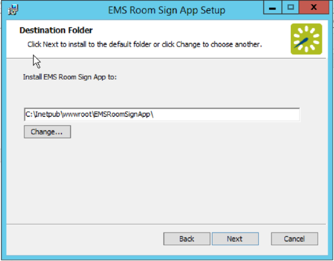
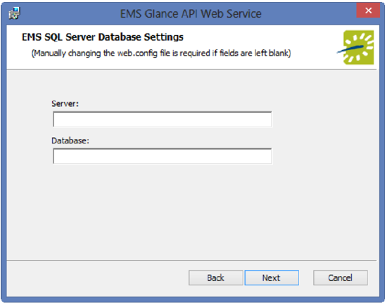
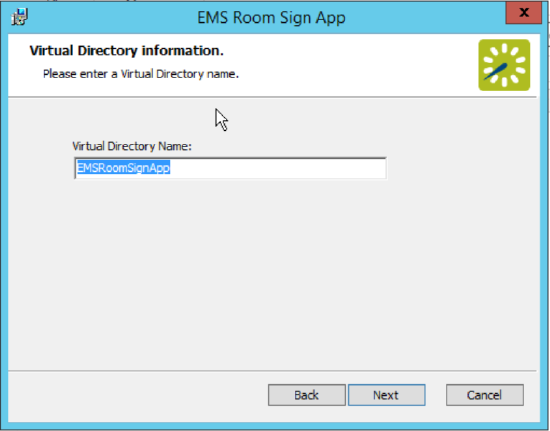
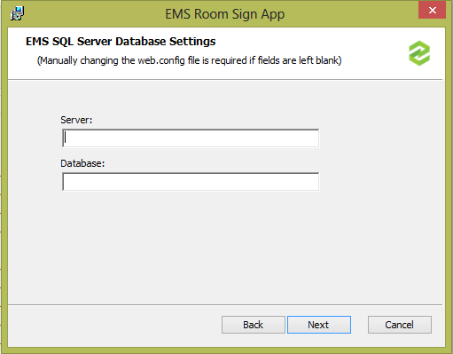
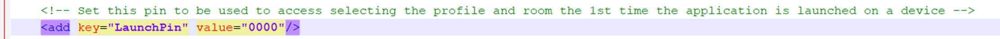
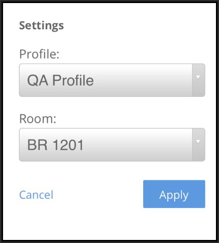

The EMS Room Sign App was formerly named EMS Glance. Some of the installation files (e.g., API, dll, etc.) will temporarily retain the Glance name.
This topic provides information about the following:
In Update 30Update 30, the Room Sign App API was moved into the EMS Room Sign application to improve performance. The EMSGlanceAPI.msi file is no longer required for customers running Update 30 or later.
Install or Upgrade the EMS Database Component (only required for Update 31 or earlier)
Install or Upgrade the EMS Room Sign App API (only required for Update 29 or earlier)
Verify the EMS Room Sign App API Installation (only required for Update 29 or earlier)
Create an EMS Admin User to Manage Your EMS Room Sign App API Web Service (only required for Update 31 or earlier)
Deregister EMS Room Sign App on Your Devices
Remove Unused Devices from the Database (exceeds licenses error) (only for Update 28 or earlier)
To install or upgrade the EMS Room Sign App, you will:
If you are upgrading to Update 30 or later, make sure you uninstall the API prior to upgrading. In Update 30Update 30, the EMS Room Sign API was moved into the application, and you no longer need to install the API separately.
For Update 31 or earlier, install the EMS Room Sign App .sql file.
If you are on Update 32, do NOT install EMSRoomSignApp.sql. If you do install the .sql file, you will need to re-install the EMS patch.
Copy the EMS Room Sign App .dll file to each user workstation that needs EMS Room Sign App options in EMS Desktop Client.
For Update 29 or earlier, install the new EMS Room Sign App API on the web server that will be running it, and verify the installation.
Install the new EMS Room Sign App web application on the web server that will be hosting it (and connect it to your EMS Room Sign App API, SQL server, and database).
For Update 30 or later, the EMS Room Sign API has been moved into the application. If you are running Update 30 or later, you will not need to connect the API to the web application.
For Update 31 or earlier, create an Admin User to manage the EMS Room Sign App API web service.
Access your EMS Room Sign application through the web on your device(s).
If you are on Update 32, do NOT install EMSRoomSignApp.sql. If you do install the .sql file, you will need to re-install the EMS patch.
Obtain the EMSRoomSignApp.sql file.
Open Microsoft SQL Server Management Studio.
Within Microsoft SQL Server Management Studio, select File > Open > File… and locate EMSRoomSignApp.sql.
Select your EMS Database and execute the query (Query > Execute). When query execution has completed, the message "Command(s) completed successfully" will appear in the Results section.
The EMS Room Sign App was formerly named EMS Glance. Some of the installation files (e.g., API, dll, etc.) will temporarily retain the Glance name.
On each client machine that needs access to the EMS Room Sign App Settings area, complete the following based on whether the install is local or web deploy:
Local Install — paste a copy of the EMS.Glance.dll file into the folder that contains your EMS application files (typically C:\Program Files\EMS).
Web Deploy Install — enter the EMS.Glance.dll in the following location:
C:\Users\<username>\AppData\Roaming\EMS2016\Extensions
Once the EMS.Glance.dll is placed in the correct folder on the client machine (assuming your organization is appropriately licensed for the EMS Room Sign App), the EMS user will see the EMS Glance Settings button on the tool bar within the EMS application.
To update your registration, obtain a new license file and import into the EMS Desktop Client by navigating to System Administration > Settings > Registration.
For Update 30 or later, you do not need to install the EMS Room Sign API because the API has been moved into the EMS Room Sign application to improve performance. See Install or Upgrade the EMS Room Sign App Web Application to continue with the installation process.
Manually uninstall any previous versions of the API on your web server.
Download the EMSGlanceAPI.msi file onto the web server that will be running the API.
Run EMSGlanceAPI.msi.
The first screen welcomes you to the EMS Room Sign App API Web Service Setup Wizard. Click Next to begin the installation process. The Destination Folder screen will appear.

Select the destination folder. The installation process will create a new physical directory on your web server based on the destination folder path entered (“EMSRoomSignApp” in the example above.) Click Next.
The API should not be installed in the same physical directory as other EMS web-based products OR under a site running another version of the API.
The EMS SQL Server Database Settings information screen will appear.

Enter your EMS SQL Server name.
Enter your EMS Database name:
EMS Professional customers (typically named “EMSData”).
EMS Workplace, EMS Campus, EMS Enterprise, EMS District and EMS Legal customers (typically named “EMS”).
Click Next.
The Virtual Directory information screen will appear.

The Virtual Directory Name will default to the destination folder specified above. It is recommended that you keep the default setting. The installation process will create a virtual directory on your web server based on the virtual directory entered (“EMSRoomSignApp” in the example above.) Click Next.
The API should not be installed in the same virtual directory as other EMS web-based products OR under a site running another version of the API.
The Ready to install EMS Room Sign App API Web Service screen will appear. Click Install to install the API.
The Completed the EMS Room Sign App API Web Service Setup Wizard screen will appear. Click Finish.
For Update 30Update 30 or later, you do not need to verify the EMS Room Sign API installation because the API has been moved into the EMS Room Sign application and no longer needs to be installed separately. See Install or Upgrade the EMS Room Sign App Web Application to continue with the installation process.
After following the steps above, verify your API installation by opening a browser and entering the API URL:
Example: http://[ServerName]/EMSGlanceAPI/service.asmx
(replace [ServerName] with the name of your web server)
This URL will be required for the EMS Room Sign App Web Application installation.
Download the EMSGlance.msi file onto the web server that will be running the EMS Room Sign App web application.
Run EMSGlance.msi.
The first screen welcomes you to the EMS Room Sign App Setup Wizard. Click Next to begin the installation process. The Destination Folder screen will appear.
Select the destination folder. The installation process will create a new physical directory on your web server based on the destination folder path entered (“EMSRoomSignApp” in the example above.) Click Next.
The EMS Room Sign App should not be installed in the same physical directory as other EMS web-based products OR under a site running another version of EMS Room Sign App.
Based on your software version, do the following:
Prior to Update 30
When the EMS Room Sign App API Path screen appears, enter the URL of your EMS Room Sign App API Web Service.
Example: http://[ServerName]/EMSGlanceAPI/service.asmx
(replace [ServerName] with the name of your web server)
Click Next.
Update 30 or Later
When the EMS SQL Server Database Settings screen appears, enter your EMS SQL Server name and your EMS Database name in the appropriate fields.

Click Next.
The Virtual Directory information screen will appear.
The Virtual Directory Name will default to the destination folder specified in Step 4. It is recommended that you keep the default setting. The installation process will create a virtual directory on your web server based on the virtual directory entered (“EMSRoomSignApp” in the example above.) Click Next.
The EMS Room Sign App should not be installed in the same virtual directory as other EMS web-based products OR under a site running another version of the EMS Room Sign App.
The Ready to install EMS Room Sign App screen will appear. Click the Install button to install the EMS Room Sign App.
The Completed the EMS Room Sign App Setup Wizard screen will appear. Click Finish.
Beginning in Update 32, you do not need to create an EMS admin user to manage the API because the API was moved inside of the EMS Room Sign App. When required for audit trail purposes, EMS will use the user “EMS Room Sign App.”
To create an EMS admin user to manage your EMS Room Sign App API web service, follow these steps:
Create the EMS Admin Account to be used for the EMS Room Sign App:
Create a user account in EMS Desktop Client under System Administration > Security > Users (with any user name and password you choose).
Ensure the Administrator box remains unchecked.
Then add the process EMS API Web Service Access to this account.
Enter the user name and password for the account in the web.config file of the EMS Room Sign App settings (see the following example excerpt from the web.config file):
In Update 30Update 30, changes were made to the web.config file. If you are running a software version prior to Update 30, your web.config file may contain different values than the ones shown in the example below.
<appSettings>
<add key="webpages:Version" value="2.0.0.0" /> <add key="webpages:Enabled" value="false" /> <add key="PreserveLoginUrl" value="true" /> <add key="ClientValidationEnabled" value="true" /> <add key="UnobtrusiveJavaScriptEnabled" value="true" /> <add key="EmsUser" value="admin" /> <add key="EmsPassword" value="admin" /> <add key="ShowDetailedErrors" value="true" /> <!-- Set this pin to be used to access selecting the profile and room the 1st time the application is launched on a device --> <add key="LaunchPin" value="" /> <add key="ExceptionHandlingSectionNode" value="glanceExceptionHandling" /> <add key="ValidateAntiForgery" value="false" /> <add key="UseRelativeFilePaths" value="false" /> <add key="ForceTLS11AsMinimumProtocol" value="false" /> <!-- Set to INFO to enable trace logging of timing associated with the most common actions - supported values: "verbose" "debug" "info" "warning" "error" "fatal" "none" --> <add key="LogLevel" value="info" /> <!-- File path to which trace logging data should be written --> <add key="LogPath" value="" /> <!-- Trace logging file size limit, in bytes --> <add key="LogMaxFileSize" value="1073741824" /> <!-- Max number of trace logging files to be retained --> <add key="LogFileCountLimit" value="10" /> <add key="UseJSON" value="true" /> <!--IsoDateFormat or MicrosoftDateFormat --> <add key="JSONDateFormat" value="IsoDateFormat" /> <!-- durationUsePrimaryDB is the duration in minutes to call the primary database to get bookings after a manual reservation is made from a Glance unit--> <add key="durationUsePrimaryDB" value="5" /> <add key="useEmsUser" value="true" />
</appSettings>
FOR EMS CLOUD CUSTOMERS: Modifications to the web.config file must be performed by EMS Cloud Operations. To request these changes, please contact EMS Support.
To set a launch pin, complete the following steps:
Open a browser and enter the URL to your EMS Room Sign App web application.
If this is your first time accessing the site,
Modify the web.config file to set a Launch Pin. Setting this value (which is blank by default), will force users to enter a code the first time they browse to the EMS Room Sign site. To set the Launch Pin key in the web.config file, do the following:
Navigate to the Room Sign App web directory.
Open the web.config file for editing.
In the web.config file, locate key="LaunchPin" and enter a value for the Launch Pin key.
Save the web.config file.

Example Screenshot with a 0000 Pin
The EMS Room Sign App is ready to use once all of the components have been properly installed and at least one Profile has been configured for use (see Configure the EMS Room Sign AppConfigure the EMS Room Sign App).
Each EMS Room Sign device is tied to one specific room in EMS. Therefore, each room you register to a device will count against your available licenses. If you get an error about exceeding your license count, you will need to deregister unused devices to free up licenses (see Deregister EMS Room Sign App on Your Devices).
To register the EMS Room Sign App on your device, do the following:
Ensure that you have configured the profile that you want to associate with the device.
On your device, open a browser and enter the URL to your EMS Room Sign App web application:
Example: http://[ServerName]/EMSGlance
(replace [ServerName] with the name of your web server)
The first time you access the EMS Room Sign App on your device, the Settings screen will appear.

Select the Profile from the Profile drop-down list.
Select the Room from the Room drop-down list.
Click Apply.
Once the EMS Room Sign App is running, to re-access the Settings screen for any reason, simply double-tap the EMS Room Sign App logo in the upper-left hand corner of the screen.
Each EMS Room Sign device is tied to one specific room in EMS. Therefore, each room you associate with a device counts against your available licenses. If you get an error about exceeding your license count, you will need to deregister unused devices to free up licenses.
For Update 28 or earlier, you should deregister devices before you delete a profile or before you delete a room from a profile. EMS Desktop Client does not automatically deregister devices when you delete a profile or room. If you have already deleted a profile or room and you did not first deregister the devices, you will not be able to deregister the devices through the Deregister Device window. You will need to access the database to remove the devices and free up licenses.
For Update 29 or later, when you delete a profile, or when you delete a room from a profile, the software automatically deregisters the devices associated with the profile/rooms.
To deregister devices and free up licenses, complete the following steps in EMS Desktop Client:
On the
In the EMS Glance window, select Deregister Device and click Open. The Deregister Device window opens.
From the drop-down list, select the Profile associated with the device you want to deregister.
From the list of rooms that appears, select the room associated with the device you want to deregister, and then click Deregister.
In the Deregister Device confirmation window, click Yes to confirm.
A message will appear explaining that the device was successfully deregistered.
Repeat steps 3 through 5 to deregister additional devices.
Click Close to exit the Deregister Device window.
For Update 28 or earlier, if you delete a profile, or rooms from a profile, without first deregistering the devices, you can get an "exceeds licenses" error even though you are not using all your licenses. When you register a device, the software builds an ID based on the profile and room that you associate with the device and stores the ID in the database to track your license use. When you delete profiles or rooms without first deregistering the devices, the IDs are not removed from the database and continue to count against your available licenses.
For Update 29 or later, when you delete a profile, or when you delete a room from a profile, the software automatically deregisters the devices associated with the profile/rooms and frees up the licenses. You do not need to remove the devices from the database.
If you are running Update 28 or earlier and you have already deleted a profile or room without first deregistering the devices, you will need to access the database to remove the IDs associated with these devices as follows:
You can use the following SQL statement to verify how many registered rooms you have before and after you remove rooms from the database:
SELECT COUNT(UDID) AS RegisteredRooms FROM sDigitalRoomSignLimit
In the EMS database, access the sDigitalRoomSignLimit table.
Use the Room ID to locate each unused device, and then remove the entire row for each unused device from the table.